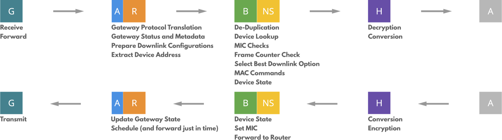

Network Architecture
The backend systems of The Things Network are responsible for routing Internet of Things data between devices and applications. A typical Internet of Things network requires gateways as a bridge between specific radio protocols and the Internet. In cases where the devices themselves support the IP stack, these gateways only have to forward packets to the Internet. Non-IP protocols such as LoRaWAN require some form of routing and processing before messages can be delivered to an application. The Things Network is positioned between the gateways and the applications (see the figure below) and takes care of these routing and processing steps.

The Things Network’s vision is to perform all these routing functions in a decentralized and distributed way. Any interested party should be able to set up their own network and their own part of the backend, allowing them to participate in the global community network. In order to decentralize the network, it was split up into a number of components shown in the figure below. To simplify, components are only shown once, even though it is possible to have one-to-many or many-to-many relations between components.

Nodes broadcast LoRaWAN messages over the LoRa radio protocol. These messages are received by a number of Gateways. The Gateway is a piece of hardware that forwards radio transmissions to the backend. It is connected to one Router. The Router is responsible for managing the gateway’s status and for scheduling transmissions. Each Router is connected to one or more Brokers. Brokers are the central part of The Things Network. Their responsibility is to map a device to an application, to forward uplink messages to the correct application and to forward downlink messages to the correct Router (which forwards them to a Gateway). The Network Server is responsible for functionality that is specific for LoRaWAN. A Handler is responsible for handling the data of one or more Applications. To do so, it connects to a Broker where it registers applications and devices. The Handler is also the point where data is encrypted or decrypted.
The goal of The Things Network is to be very flexible in terms of deployment options. The preferred option is to connect to the public community network hosted by The Things Network Foundation or its partners. In this case the Application connects to a Public Community Network Handler, usually using the MQTT API.
It is also possible to deploy private networks, by running all these components in a private environment. This way, all data will remain within the private environment, but you can still make use of TTN’s hosted Account Server for authentication and authorization.
Hybrid deployments will be possible in the future. The most simple option for this, is for someone to run his own Handler, allowing them to handle the encryption and decryption of messages. A more complicated option is a private network that exchanges data with the public network. For this to work, private Routers will have to connect to public Brokers and vice versa. In this case the private network can offload public traffic to the community network and use the public community network as back-up. The latter is not yet possible with the current implementation of the backend.
Core Functionality
The Things Network provides a LoRaWAN Network Server. LoRaWAN is a “network-intensive” protocol, intensive in the sense that due to the simple and minimalistic approach for devices, the backend systems (also called Network Servers) are responsible for most of the logic. LoRaWAN was designed for the centralized architecture of telecom operators, so in order to run on a distributed infrastructure like The Things Network, some steps had to be added. In The Things Network’s backend we now distinguish a number of different core functions.
Firstly, there are Gateway-related functions such as scheduling and managing the utilization of the gateways. Scheduling is needed because a gateway can only do one transmission at the same time. The utilization information is used to evenly distribute load over different gateways and to be compliant with the European duty cycles. Another important feature is monitoring the status of each gateway.
Secondly, we need device-related functions that manage the state of devices in the network. As device address are non-unique, the network has to keep track of which addresses are used by which devices in order to map a message to the correct device and application. Other things the network must keep track of are the security keys and frame counters. In the future we will also start keeping track of the network utilization of each node.
Thirdly there is some functionality related to applications. For example, the Brokers and Handlers need to know to which server traffic for a specific application needs to be forwarded. The Handlers need to know how to interpret binary data, and bridge to higher-layer protocols, such as AMQP and MQTT.
Finally, and most importantly, as The Things Network is a distributed network, there has to be functionality that supports this distribution. Service discovery functionality helps components to determine where traffic should be routed to. Currently, this is implemented as a centralized Discovery server, giving The Things Network Foundation control over which components are allowed to announce specific services.
Separation of Concerns
In order to make the different backend components as decoupled as possible, we make a clear separation of the responsibilities of each component. The general idea is that the Router is responsible for all gateway-related functionality and region-specific details. A Broker handles a range of device addresses and is responsible for finding the right Handler to forward each message to. The Network Server is responsible for keeping the state of all individual devices. The Handler is responsible for encryption, decryption and conversion of messages and for forwarding messages to applications.
Processing Flow of Uplink Messages
Based on this separation of concerns we implemented The Things Network’s backend. As each component component has a number of high-level responsibilities, it has to execute a number of tasks when processing uplink and downlink messages. An overview of this flow is depicted in the figure below and is discussed in detail in the rest of this section.

Gateway Protocol Translation (Router/Bridge)
When a gateway receives a message that was transmitted over LoRa, it is encapsulated and forwarded to The Things Network over the Internet (see figure below). Many gateways use the same reference gateway protocol, but alternative protocols have been developed for specific backends. The Things Network is also developing its own gateway protocol that is more suitable for The Things Network than the reference protocol in terms of security and access control.
Most gateway protocols have the same structure. When one or more messages are received, their binary payload is forwarded to the backend, together with metadata such as signal strength (RSSI) and signal-to-noise ratio (SNR). Periodically the gateway also sends some status information about the gateway itself, such as GPS coordinates, the number of packets received and transmitted and other metrics.
We expect to connect gateways from different vendors, running different protocols. In order to keep the backend of The Things Network as generic as possible, we implement a number of bridges that translate from each vendor-specific gateway protocol to the protocol used internally in the backend of The Things Network.
Gateway Status and Metadata (Router)
The GPS coordinates of a gateway can especially be relevant to the application. Therefore the backend stores the latest status message sent by the gateway and injects the GPS information into the metadata of each uplink message.
Downlink Configuration (Router)
In LoRaWAN the downlink response to an uplink message is highly dependent on the geographic region of the gateway, and are described in the “LoRaWAN Regional Parameters” specification. As the Router is responsible for all gateway-related and region-specific details, the Router has to determine how a downlink response can be sent to a device. After each uplink message, there two receive windows, one at exactly 1 second after the uplink, the other after 2 seconds. Therefore, for each gateway that received the uplink message, a Router builds two downlink configurations.
In order to select the best option later, the Router additionally has to calculate a score for each option. This score is influenced by a number of factors. At the moment we consider airtime, signal strength, gateway utilization and already scheduled transmissions. The latter is quite obvious, as a gateway can not do two transmissions at the same time. Scheduling a downlink message on a gateway that had a better signal strength (signal-to-noise ratio) also makes it more likely that a node will receive the downlink correctly.
The combination of the airtime of a message and the utilization of a gateway is used to optimize the network as a whole. As each transmission blocks the receivers of a gateway for some time, it is better to send messages in a shorter time. Therefore, downlink messages at a higher data rate are preferred over messages with a lower data rate. The utilization of a gateway indicates the percentage of time a gateway is receiving messages. Gateways with a higher utilization (because of being positioned at a good location) are therefore more valuable to the network than gateways with a lower utilization. Therefore the latter should be preferred for downlink messages, so that the former can continue receiving uplink messages.
Device Address Extraction (Router)
The first step in routing a packet is based on the device address. This DevAddr is a non-unique 32-bit address of which 25 bits can be assigned by the network operator. The Things Network has chosen to distribute the traffic based on device address prefix. Each Broker announces a number of device address prefixes with a discovery service. These prefixes are similar to how IP address ranges are announced in BGP. Network components can periodically retrieve the list of Brokers and their announced prefixes. Messages are forwarded to all Brokers that announce a prefix matching the device address of the message.
De-Duplication (Broker)
LoRaWAN is a long-range radio protocol, making it likely that the message is received by more than one gateway. This means that the backend has to perform some kind of de-duplication in order to deliver a message only once to the application. This does not mean that the duplicates are unimportant. The metadata of these messages might be valuable as well. For example, when combining the locations of the gateways that received the message with the reception time and the signal strength, it might be possible to determine the location of the device that sent the message.
De-duplication is not easy to do in a distributed system, but can be very simple when there is only one server. Therefore, we decided to make a an abstraction on top of the de-duplication implementation. This makes it easy to replace the actual implementation with one that is most suitable for the use-case, while still keeping the same interface:
type Deduplicator interface {
// Deduplicate a value based on a given key
Deduplicate(key string, value interface{}) []interface{}
}
The current implementation of the backend locally de-duplicates uplink messages based on the md5 sum of the payload. The payload of the message will be the same for all duplicates, and the chance that during the de-duplication period (usually a couple of seconds) a different message with the same hash arrives, is extremely low.
Gateways can be connected to any access network. Some are connected to wired ethernet, others use WiFi or even GPRS connections to the Internet. So even though radio waves travel at the speed of light, the network delay makes that duplicate messages do not arrive at the Broker at the same time. In order to collect the metadata added to the message by each gateway, the Broker has to buffer duplicates for some amount of time. That time should be long enough to gather as many duplicates as possible, but short enough to give the application enough time to reply to a message in the receive window that will be opened 1 second after the transmission.
Our measurements in the current deployment of The Things Network have shown that the average delay between the first and last duplicate is just under 100 ms, with the maximum delay at about 300 ms. We do realize that these measurements are done in a network where gateways are not yet densely deployed, so we need more data in order to draw conclusions. However, these values give a decent indication for the required de-duplication time, which is currently set at 200 ms. When more data is gathered, this time can be further optimized.
Device and Application lookup (Broker/Network Server)
Because device addresses are non-unique it is necessary to determine the exact device that sent the message, and the application it belongs to. To do this, the backend has to perform a series of cryptographic message integrity code (MIC) checks, one for each device that uses the same device address. To do so, the Broker requests a list of devices with the given device address from the Network Server and checks if the MIC can be validated using network session key. If no match is found, the message is dropped.
Frame Counter Check (Broker)
The frame counter in LoRaWAN messages is a security measure used to detect replay attacks. After validating the MIC, the Broker checks if the Frame counter is valid. As frame counters can only increase, a message with a frame counter that is lower than the last known frame counter should be dropped. Additionally, the Broker has to verify that the gap between the last known frame counter and the counter in the message is not too big. According to the LoRaWAN specification, the maximum gap is 16384.
LoRaWAN supports both 16-bit and 32-bit frame counters. However, only the 16 least significant bits of the counter are included in the message header. Therefore, the backend has to keep track of the full 32-bit frame counter and use this instead of the 16-bit counter that is included in the message.
Metadata Collection (Broker)
When all checks have succeeded, the Broker can continue processing the message. First, it merges the duplicates received from all different routers and gateways. In this step it is important to differentiate between metadata that is the same for every gateway that received the message and metadata that is specific to each reception. For example, the frequency, modulation and data rate will be the same for all gateways, so it only needs to be forwarded once. On the other hand, the signal strength, reception time and GPS coordinates of each gateway should all be included when forwarding the message. In this step also the different downlink configurations are collected in order to select the best option in the next step.
Selecting Best Downlink Option (Broker)
The Broker has to select the best option for a downlink response to a message. As the Broker does not have any information about the gateway that received a message, it is very difficult to do this. Therefore the Router already calculated a score for each downlink configuration. If this score calculation is done in a standard way, the Broker now only has to sort all possible downlink options and use the best option.
Device State and MAC Commands (Network Server)
Before forwarding the uplink message to the Handler, it is first sent to the Network Server so that the device’s state can be updated. The Network Server also adds a downlink template to the message. This template can be used by the Handler to send a downlink message back to the device. It contains all necessary values (such as the frame counter, message type and option flags) so that the Handler only has to add the application payload to the message. Additionally, this gives the Network Server a chance to add MAC commands to the message. For example, based on the number of gateways that received a message and their signal strength, the Network Server may add MAC commands that instruct the device to transmit at a higher data rate.
Message Decryption (Handler)
As messages are end-to-end encrypted, the backend is also responsible for decrypting messages. However, not in all cases the application owner might want The Things Network to be responsible for that. Therefore message decryption is placed in a separate component (the Handler), allowing an application owner to run this Handler in his own private environment.
After decrypting the message payload, the Handler can pass the message up to the application. However, for many applications, some simple decoding and conversion is required.
Payload Conversion (Handler)
After decryption, the Handler is able to decode and convert the payload into a format that is easily accessible by the application. The implementation of the default Handler therefore includes so-called payload functions. These functions are simple JavaScript functions that can be used to decode, convert and validate data. The decoder is used to decode the binary payload into a format that is more appropriate. For example, the following function decodes a temperature value sent as two bytes to a JSON object:
function (bytes) {
var data = (bytes[0] << 8) | bytes[1];
return { temperature: data / 100.0 };
}
The optional converter can convert values in the decoded JSON object. This could for example be a conversion from a voltage to an actual value, or from a temperature in Celsius to a temperature in Fahrenheit. The optional validator can be used to check the validity of the data and drop outliers. In the future these payload functions can adapt their behaviour to the FPort field of the message, allowing the community to define standard data encoding formats for each FPort. An example could be a standard format for sending weather station data.
MQTT (Handler)
The default Handler implementation simply publishes a JSON representation of uplink messages to a topic <app_id>/devices/<dev_id>/up on an MQTT broker. This allows applications to simply subscribe to the same MQTT topic and process the data in any way.
Downlink (Handler)
After publishing the uplink message to MQTT, the Handler will determine whether it is necessary to reply to the device with a downlink message. There are three situations when a downlink message needs to be sent. The first and most obvious is when the application has a payload available to send to the device. In this case the payload is added to the response template that was generated by the Network Server. The second case is when the uplink message requires confirmation. Regardless of a downlink payload being available or not, an acknowledgement has to be sent. The third situation is when the Network Server needs to send MAC commands to the device. If this is detected, the handler could decide whether to obey the Network Server or not, although the current implementation always follows the Network Server’s request.
Similar to with uplink messages, the Handler is responsible for encrypting the payload of the message.
If no downlink payload is available, the Handler may choose to wait for a short time to let the application prepare a downlink message based on the uplink message it just received. After this deadline is expired, the Handler must send the downlink message back to the Broker.
Device State (Network Server)
After the Broker receives a downlink message from a Handler, it sends the message to the Network Server, which will update the device’s state (specifically, the frame counters) in the database and generate the MIC of the message. After this, the Broker forwards the downlink message to the router that is responsible for the gateway that has to transmit the the downlink message.
Downlink Scheduling (Router)
As mentioned in the beginning of this chapter, the Router is responsible for managing the schedule of the Gateway. As most gateways only have a buffer of 1 downlink message, the Router has to buffer scheduled messages until the last moment, and then send each message just in time to the gateway.